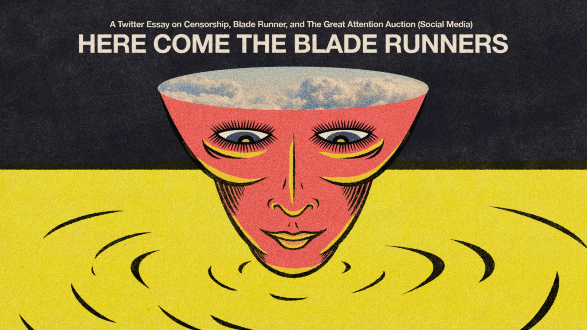
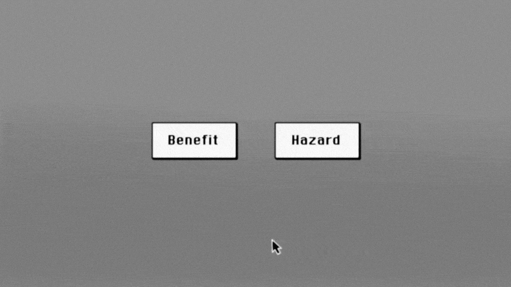
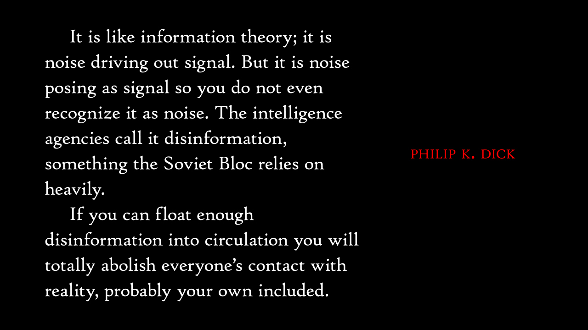

Micah Bell
@micahbell
·
Feb 26, 2021
With the president banned from Twitter, FB, and others, the current solution is like a played out directive. Here Come The Blade Runners: A multimedia Twitter essay on censorship, Blade Runner, and The Great Attention Auction (Social Media)

Micah Bell@micahbell
Essay, images, and design by me. Images and illustrations that are not 100% original have been brought to life from the public domain.
Micah Bell@micahbell
"It seems you feel our work is not a benefit to the public?" Gold and white ripple off the walls. An owl turns its head a full 360, eyes orange. "Replicants are like any other machine, they're either a benefit or a hazard. If they're a benefit it's not my problem."
Micah Bell@micahbell
Deckard, a Blade Runner, rattles this off like it's something we are meant to accept. Benefit or hazard.

Micah Bell@micahbell
In the world of Blade Runner, there are replicants (androids) that have been created by Dr. Eldon Tyrell to serve humans. The problem is that the newest Nexus-6 replicants are made too well, and the line between human and machine is diminishing.
Micah Bell@micahbell
*Insert Blade Runners here* - the hitmen sent to "retire" unlucky replicants that deviate from their programming (in other words they grow a soul.)
Micah Bell@micahbell
The people of Earth in Ridley Scott's film adaptation appear to be suffering under the same creed that we do - technology is god. Tyrell has achieved mythic status, not by asking "why not?" but by refusing to ask "why?"
Micah Bell@micahbell
Sounds familiar. I have no doubt Dr. Tyrell spent his fair share on the cover of TIME or Forbes as he developed the Nexus-6 line of robots.
Micah Bell@micahbell
We know this story well. Brilliant mind with relentless pursuit of "progress" via technological development creates breakthrough tech causing unforeseen problems with said tech.

Micah Bell@micahbell
Technology giveth and technology taketh away - according to Neil Postman.
Micah Bell@micahbell
Problematic replicants fell into Deckard's "hazard" bucket - a bucket with only one option - retirement. Of course the solution is, as usual, violence.
Micah Bell@micahbell
Violence is something we can turn to when the genie we let out of the bottle starts to think for itself.
Micah Bell@micahbell
We commonly refer to these technological hazards as "unintended consequences" as if they are some form of inevitability that we have to live with in the name of "Progress."

Micah Bell@micahbell
Like you, I've been preoccupied lately with thoughts on censorship and its use on social media platforms. & today I heard Deckard's voice like some sort of Executive decision, "Benefit or hazard." Or as the team at Twitter say, "!This claim about election fraud is disputed."
Micah Bell@micahbell
This feeble disclaimer made me think Twitter was just trying to buy time. "What new technology can be rolled out to properly monitor hate speech that incites insurrection?"
Micah Bell@micahbell
Our sacred solution - more tech to eliminate broken tech.

Micah Bell@micahbell
I've been thumb-sifting through the dialogue since the censorship tactics were rolled out on our president and others like him who speak falsehoods about such things as national elections or pandemics.
Micah Bell@micahbell
While I certainly agree with the removal, I am more concerned about what took so long, and why now? Was it the storming of the capital that caused @Jack to say "enough"?
Micah Bell@micahbell
Actor Wil Wheaton recently mentioned on the @Kingcast podcast that he left Twitter because there were "too many fascists" on the platform. This ain't new.
Micah Bell@micahbell
Maybe it was the righteous letter signed by over 300 Twitter employees that were willing to put their livelihood on the line to see some form of accountability carried out.
Micah Bell@micahbell
It feels a lot like the exec-folks at Twitter are debating whether or not Blade Runners should be retiring replicants. Is disinformation a benefit or hazard? Should it be retired? To me, it all seems too little too late. That shouldn't be the question we're asking.

Micah Bell@micahbell
We've left ourselves with only silence or unchecked disinformation. Who's guarding the cork to the genie's bottle?
Micah Bell@micahbell
How could disinformation be a benefit? To Twitter, it has been for a long while. Racism, hate, lies, conspiracy = clicks, clicks, clicks, clicks.

Micah Bell@micahbell
This is why the move to ban accounts seems performative, no matter how thankful I am that the former president's hateful rhetoric has been silenced.
Micah Bell@micahbell
When will the alignment of Twitter's bottom-line-calculus be recalibrated?
I don't see Social Media, in general, as the problem. Author @DavidDark likes to compare Social Media to paper, which I tend to agree with, as it's just another medium. It's just us - louder.
But what happens when the paper you're writing on only accepts ink when you write lies, fear, disinformation, etc.? The scale is tipped toward algorithmic hate.

Micah Bell@micahbell
I can hear Rod Serling's (Twilight Zone) voice in my head introducing me to a man who is offered the ability to write only best selling novels, but that each one will misinform an entire generation on the subject of interest.

Micah Bell@micahbell
Attempts to censor the written word are generally frowned upon in the U.S. as a means of upholding the credibility of the "marketplace of ideas" as being the true arbiter of all things knowaboutable.
In "Technopoly", Neil Postman thinks the Founding Fathers believed this marketplace of information would allow citizens to "make sense of what they read and heard and, through reason, judge its usefulness."
Micah Bell@micahbell
But they didn't predict this marketplace would be broken down into information chaos. A generous view of history would say they saw access to information as a means to helping humanity gain knowledge, not a tool to hold our attention for monetary gain.
A common theme I hear from peers today is that they just can't seem to tell what's real (true) anymore. Everyone holds their own version of reality in their hands.

Micah Bell@micahbell
Lie after lie after lie was broadcast as signal, when in reality it was just noise. The Great Attention Auction went to work and capital "T" Truth was split in half like two sides of a mirror.
Aided by algorithms that are indifferent to such costly human intangibles like "community" or "empathy", the marketplace of ideas has unraveled for the sake of what Postman refers to as the "saleability of irrelevant information."

Micah Bell@micahbell
With more tech comes more access to information. With more access to information, we need controls to organize the information (Social Media -> algorithms). I suppose if there is hope for putting the genie back in the bottle, this is where it'll happen.
Micah Bell@micahbell
The move to ban speech that is out of line with policy and guidelines is a chewing-gum-on-a-dam-wall fix. It conveniently ignores the real problem while allowing the auction to continue.

Micah Bell@micahbell
The cracks have been forming for years and years. Many have warned of this exact situation for some time. Meanwhile, a fresh canary is put in the coal mine cage.
Micah Bell@micahbell
We press on. 'Cuz that's what Technopolies do. Until the next riot, act of terror, or hate crime that is so appalling that Big capital "T" Tech swoops in to pretend they care.
Micah Bell@micahbell
*The gavel bangs* Our thumbs itch and we keep scrolling.
